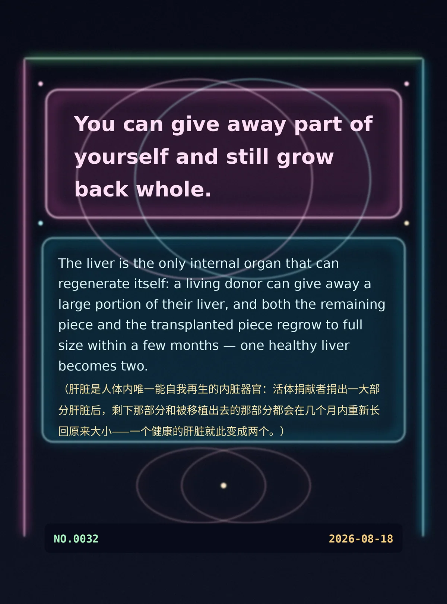

You can give away part of yourself and still grow back whole.
The liver is the only internal organ that can regenerate itself: a living donor can give away a large portion of their liver, and both the remaining piece and the transplanted piece regrow to full size within a few months — one healthy liver becomes two.（肝脏是人体内唯一能自我再生的内脏器官：活体捐献者捐出一大部分肝脏后，剩下那部分和被移植出去的那部分都会在几个月内重新长回原来大小——一个健康的肝脏就此变成两个。）